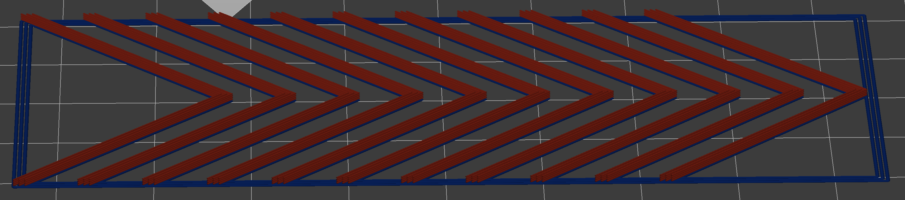

Ellis' Pressure Advance Calibration Tool
Original Marlin calibration tool by SineosHeavily modified/rewritten by Andrew Ellis
Also see my print tuning guide
Caution!
If Start G-code is incorrect, it could damage your printer. Anything which could damage your printer could
cause other damage. Be absolutely sure your Start G-code is correct before printing the generated
G-code
Use this form to generate G-code that you can use to calibrate your pressure advance.
Press the "Generate G-code" button followed by "Download as file" to save the result.
If having issues, click "Restore Defaults" at the bottom.
Example

Settings |
||
General |
||
| Use mm/s instead of mm/min | ||
Notes(Optionally add notes in comments at the top of the g-code) |
||
| Optional. Puts printer name in a comment in the g-code | ||
| Optional. Puts filament name in a comment in the g-code | ||
Printer |
||
| Rectangular or round bed. Round beds will activate Origin Bed Center | ||
| Size (mm) of the bed in X | ||
| Size (mm) of the bed in Y | ||
| Set the origin position (X0 Y0) to bed center instead of front-left corner | ||
| Usually "extruder" if only one extruder. Allows choosing extruder if more than one | ||
| Travel speed | ||
| Diameter of the nozzle (mm) | ||
Start / End G-code |
||
|
Use custom start g-code (below). The defaults have a lot of redundancies and are intended to be revised You should generally be able to copy your usual start g-code from your slicer |
||
| Hotend temperature in celcius | ||
| Bed temperature in celcius | ||
|
Thoroughly check this before printing. Incorrect start G-code can potentially cause crashes and damage. |
||
|
Copy your normal end G-code from your slicer (and replace any dynamic variables with real values). |
||
Filament / Flow |
||
| Diameter of the used filament (mm) | ||
| Usually around 0.94 for ABS | ||
| Line width (as a ratio of nozzle diameter). Match your thickest perimeter from your slicer settings (internal/external) | ||
Retraction / Z Hop |
||
| Use firmware retract. Needs to be set up in Klipper | ||
| Retraction distance (mm) | ||
| Retract speed of the extruder | ||
| Unretract speed of the extruder | ||
| Enable Z hop on retracts | ||
| Z hop height | ||
First Layer Settings |
||
| First layer height (mm) | ||
| Speed for first layer | ||
| First layer fan speed (%) | ||
| Perimeter count for anchor frame | ||
| Anchor layer line width (as a ratio of nozzle diameter) | ||
Print Settings |
||
| Layer height (mm) | ||
|
Pattern print speed Use your fastest perimeter speed from your slicer settings if they are > 100mm/s (6000mm/min) Otherwise, use 100-120mm/s |
||
|
Printing acceleration (mm/s2). Use your fastest perimeter acceleration from your slicer settings |
||
| Fan Speed (%). High fan speed recommended, as this print has very short layer times | ||
Pattern Settings(Unchecked will use defaults. Defaults are usually fine.) |
||
| How tall to print the pattern (mm) | ||
| Perimeter count. This will slightly impact print size | ||
| Length of the pattern sides (mm) | ||
| Horizontal distance between the corner patterns. This will impact print size | ||
| Angle of the test pattern corners. | ||
| Rotates the print in 45° steps | ||
Pressure Advance Stepping(Start with ~0 to ~0.08 for direct drive or ~0 to ~0.8 for bowden.) |
||
| Starting value for pressure advance | ||
| Ending value of pressure advance | ||
| Stepping of the pressure advance value in the test pattern. Needs to cleanly divide into pressure advance range (End - Start) | ||
G-Code |
||
| (and update 3d preview) | File Name: .gcode | |
3D PreviewLine widths are approximations only. | ||